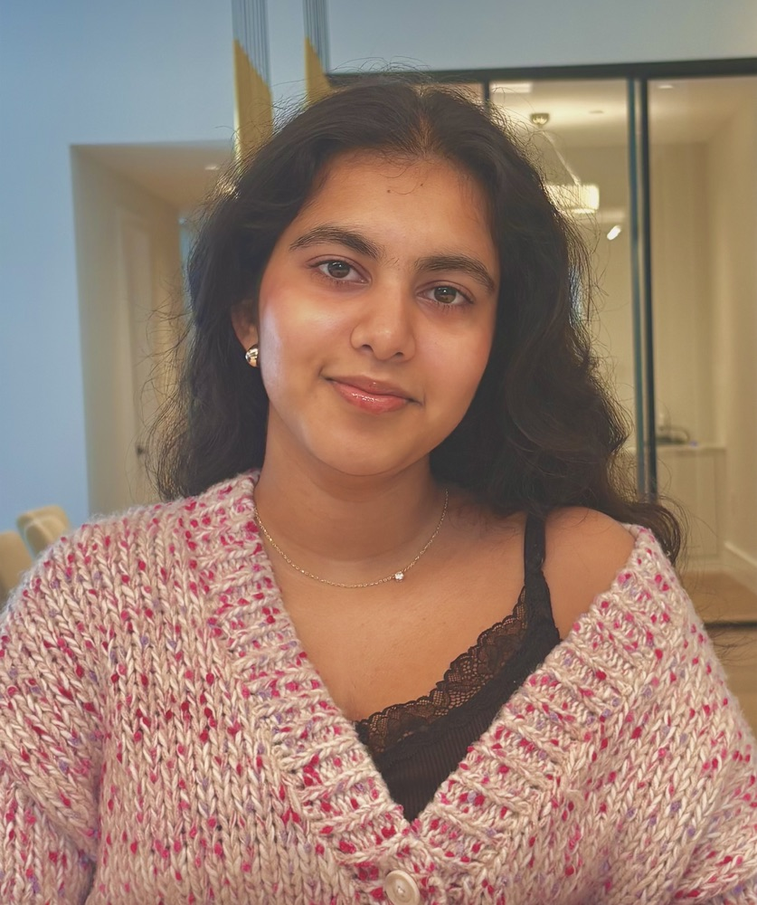

Co-founder
Aanya Aggarwal
Aanya has a keen interest in biotechnology research and medicine. Driven by her passion for using science to positively impact women's lives, she aspires to contribute to advancements in these fields. Aanya enjoys singing, acting, cooking, traveling, and reading murder mysteries.